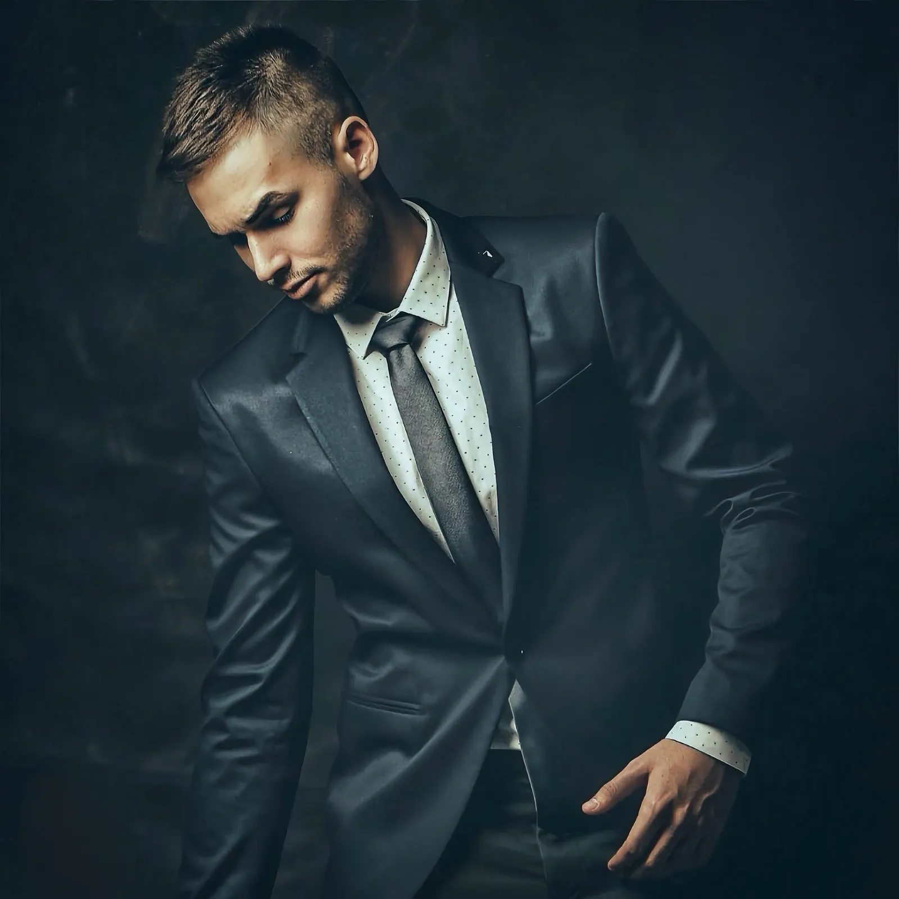
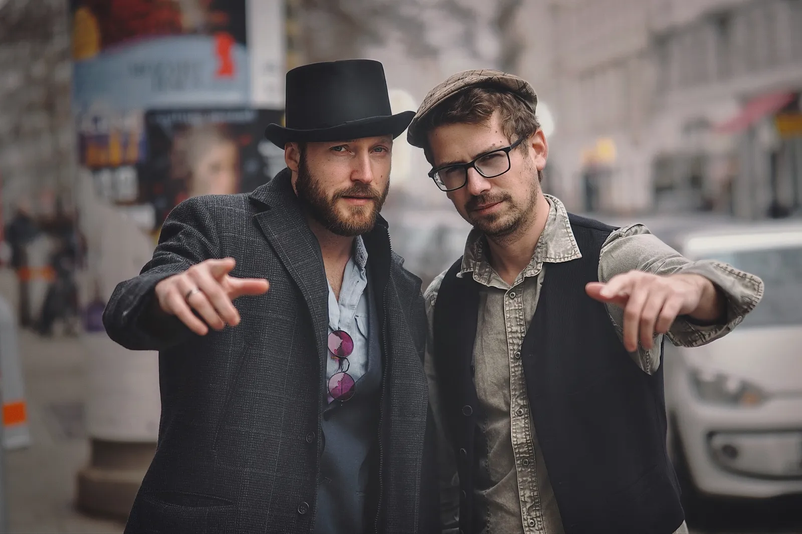
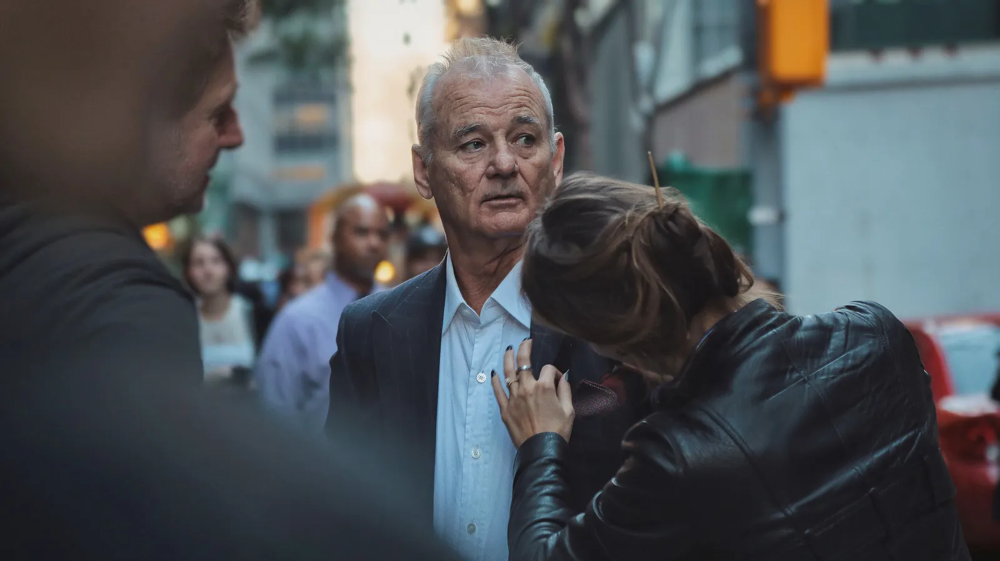
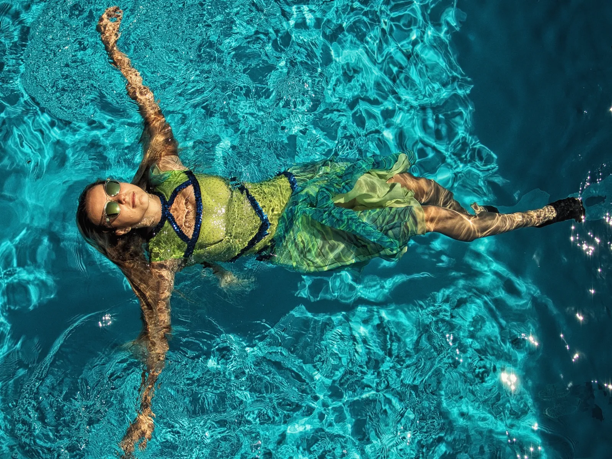

Ich fotografiere keine Rollen. Ich suche den Menschen, der sie trägt.
Ein Führungsporträt begegnet Menschen oft früher als die Person selbst. Deshalb ist es für mich eine stille Form von Verantwortung.
Ich führe die Sitzung ruhig und präzise, damit Sie keine Rolle spielen müssen. Ziel ist nicht, wichtig zu wirken, sondern glaubwürdig, präsent und menschlich sichtbar zu werden.
Warum dieses Porträt zählt
Ein Führungskräfteporträt ist kein Kostüm für den Beruf. Es ist eine Verbindung zwischen dem Menschen, seiner Rolle und den Menschen, die beiden vertrauen sollen.
Zuerst sprechen wir darüber, wo das Bild wirken muss: LinkedIn, Website, Presse, Vorstands- oder Geschäftsführungskommunikation, Investor Relations oder öffentliche Sichtbarkeit. Erst dann wähle ich die visuelle Sprache.
Wie ich arbeite
Die Kamera kommt nach dem Gespräch. Ich gebe klare Führung, aber ich lege dem Menschen vor mir keine Maske auf. Die stärksten Porträts entstehen oft dann, wenn der Druck zu wirken verschwindet.
Retusche ist für mich Verfeinerung, nicht Veränderung. Der Mensch muss erhalten bleiben.
Wem ich helfen kann
Für Führungskräfte, Gründer, Expertinnen und öffentlich sichtbare Persönlichkeiten, die ein Porträt brauchen, das ruhig, vertrauenswürdig und menschlich wirkt.
Was ich für Sie sichtbar mache
Eine geführte Session, visuelle Richtung, Nutzungsstrategie für LinkedIn, Website, Presse oder Führungskommunikation und eine Retusche, die die Person nicht glättet, sondern bewahrt.
Auch die Erfahrung zählt.
Ich möchte, dass Sie mit Porträts gehen, die sich auch Jahre später noch wahr anfühlen. Dafür muss niemand Sicherheit spielen. Sie darf während der Arbeit entstehen.
Kuratierte Porträtstudien
Alle porträtbezogenen Arbeiten aus dem aktuellen Archiv sind hier sichtbar: Executive-Porträts, Personal-Branding-Bilder, künstlerische Studien und Fine-Art-Porträts. Die Sektion bleibt bewusst ruhig, bildgeführt und vollständig lazy-loaded.





